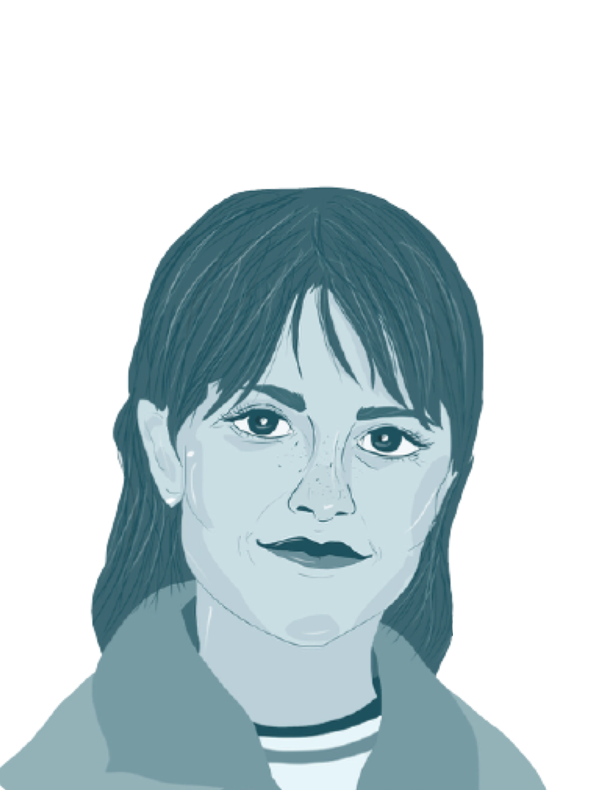
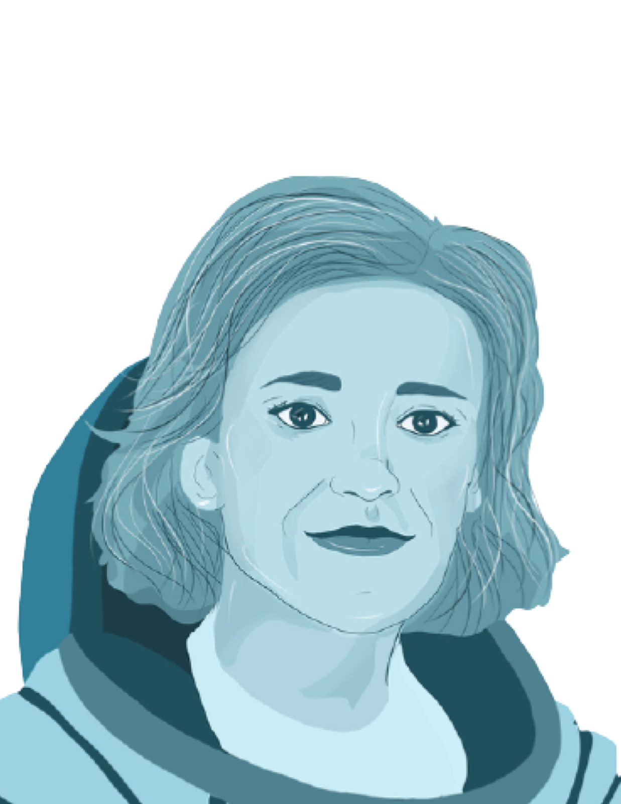
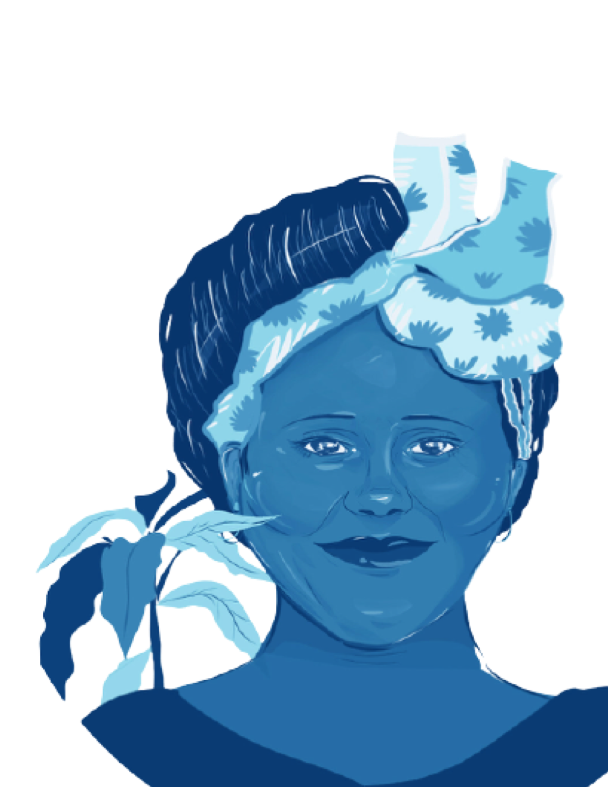
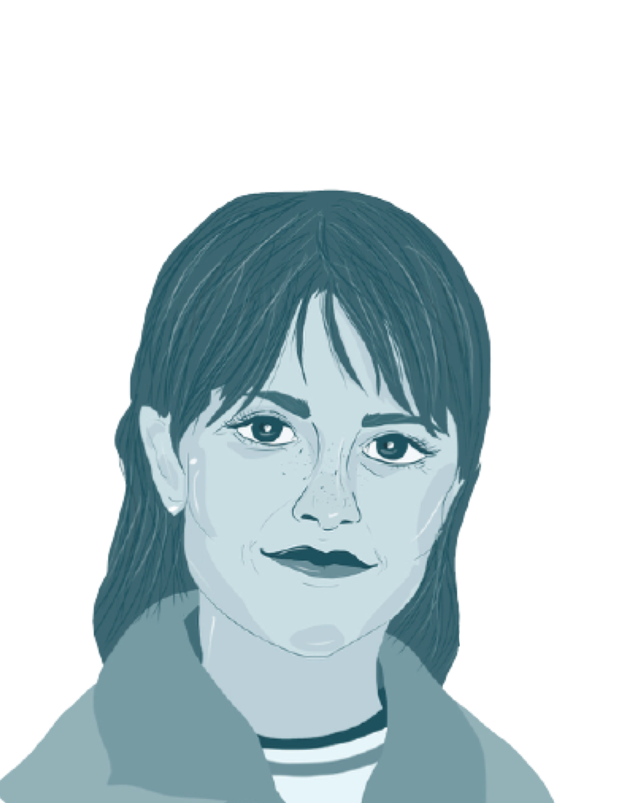
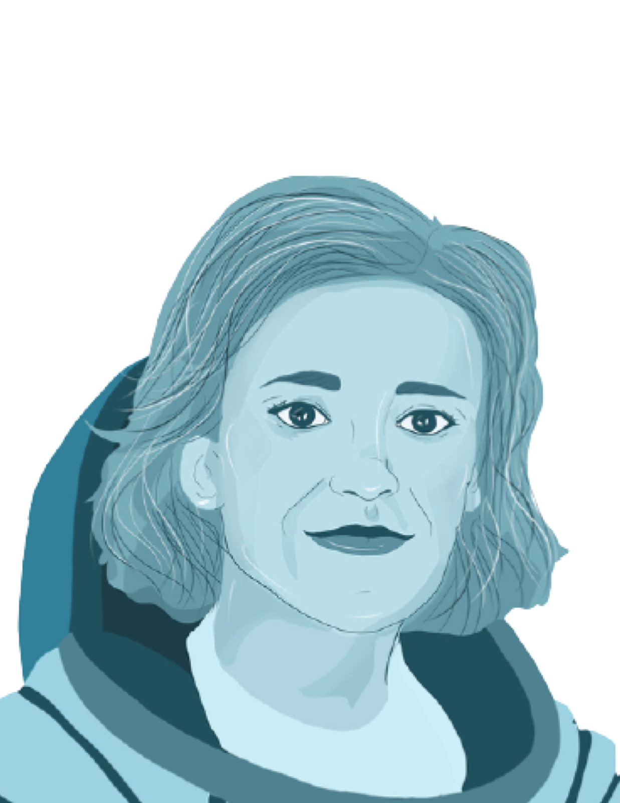
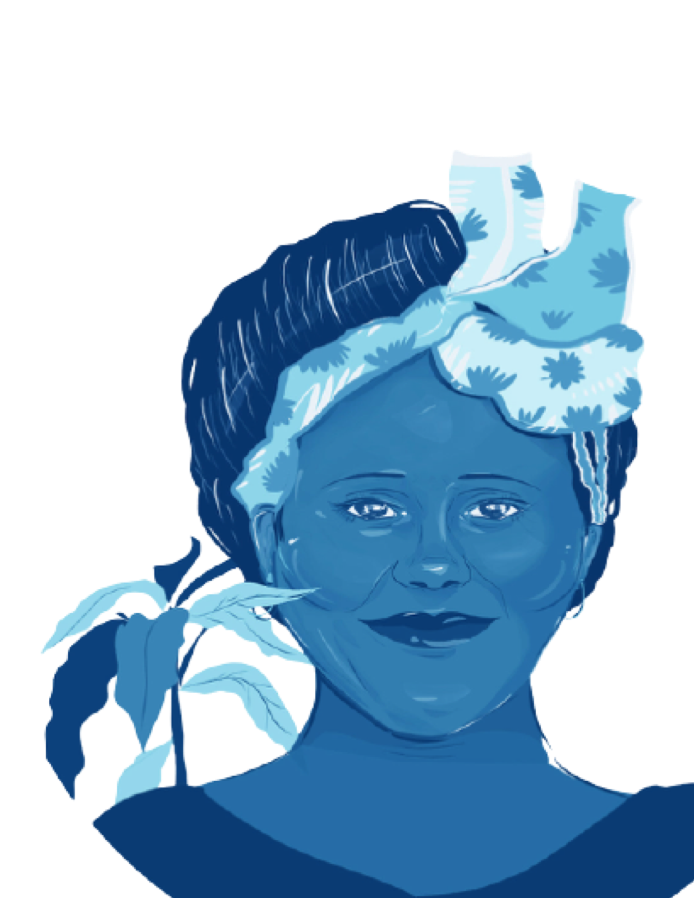
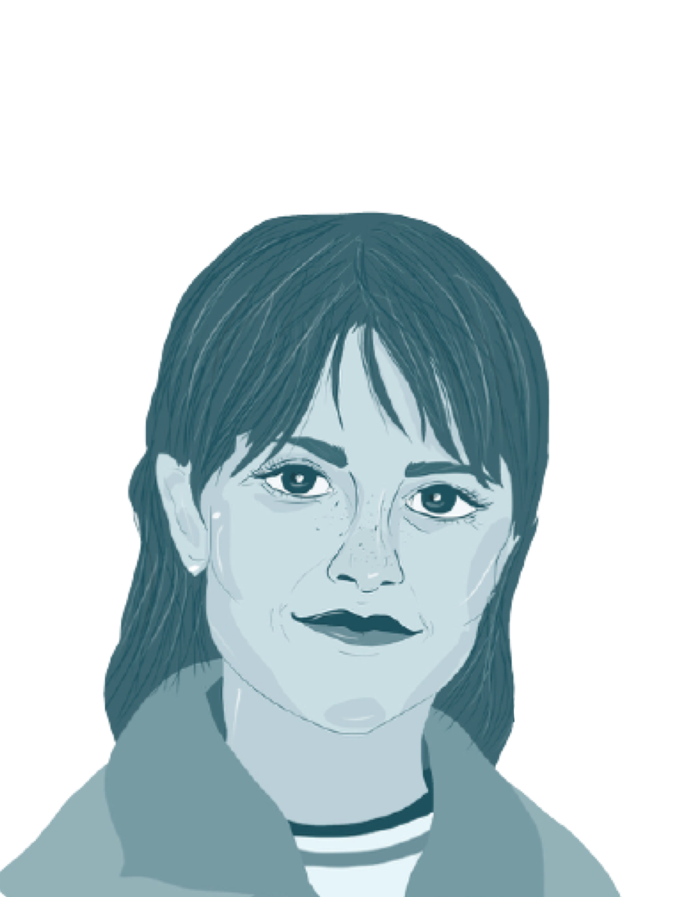
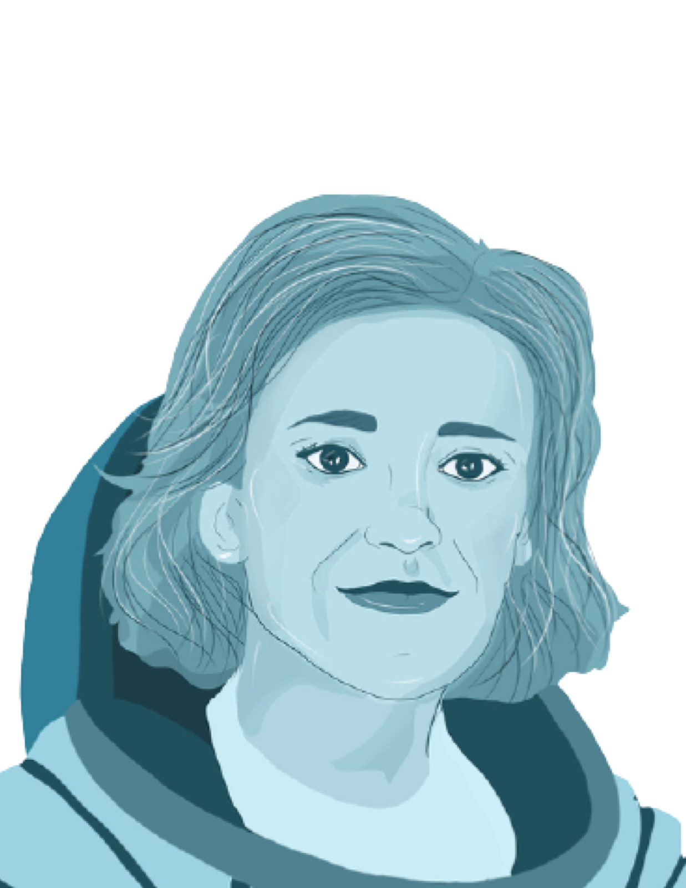
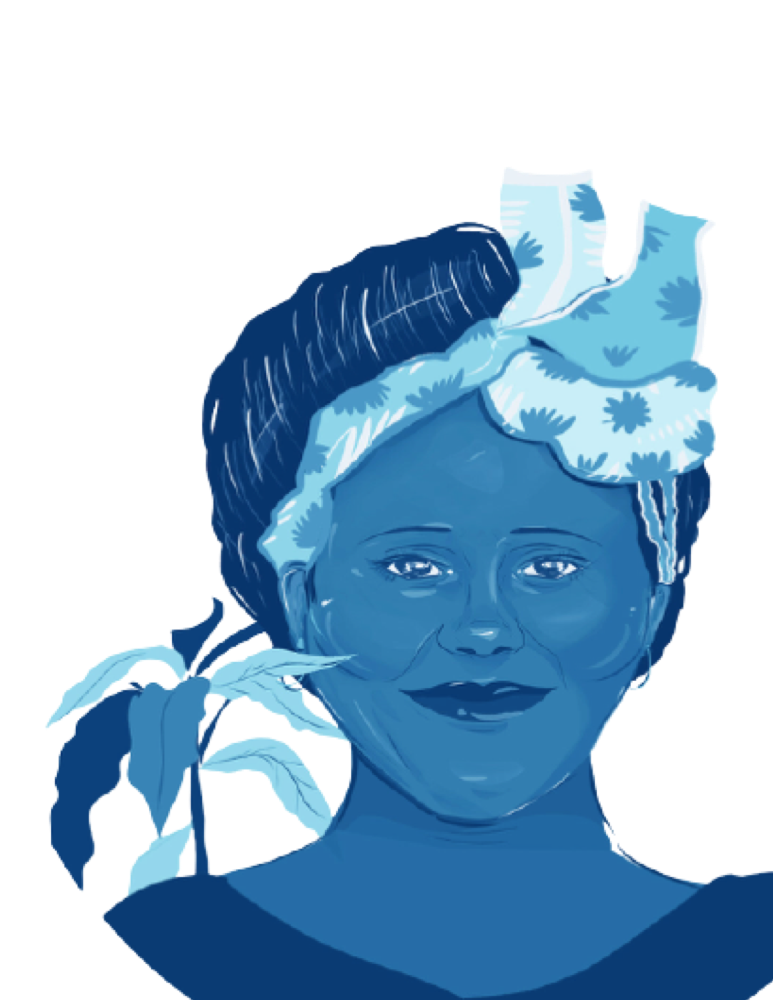

L'éducation est l'arme la plus puissante pour changer le monde.



Diplômée de la facultée de droit de Harvard. Avocate et ancienne Première dame des États-Unis.
Diplômée de l'Université d'Oxford en philosophie, politique et économie. Prix Nobel de la Paix
Diplômée de Sciences-po Paris et ENM. Ancienne ministre de la santé et icône de la lutte féministe en France
Diplômée de l'Université de Boston en économie et relations internationales. Représentante des États-Unis
Diplômée de l'université de Brown en littérature anglaise. Actrice, activiste.
Diplômée en médecine de l'université de Paris. Prix Nobel de médecine, elle a participé à la découverte du virus du sida.
Diplômée d'Oxford et de la faculté de droit de New York. Avocate en droit international.
Première au concours de l'agrégation de mathématiques, doctorat en physique. Première femme professeure à La Sorbonne, deux fois prix Nobel (physique & chimie).
Diplômée de école de droit Hastings de l'université de Californie. Vice-Présidente des Etats-Unis.
Diplômée de l'école de l'air, pilote de chasse de l'armée de l'air française. Elle est la première femme à intégrer la Patrouille de France.
Docteure en neurosciences. Scientifique, spationaute et Ministre déléguée à la Recherche, première femme française et européenne dans l'espace.
Diplomée de l'Université de Nairobi. Prix Nobel de la Paix, biologiste, professeure d'anatomie en médecine vétérinaire et militante politique et écologiste.